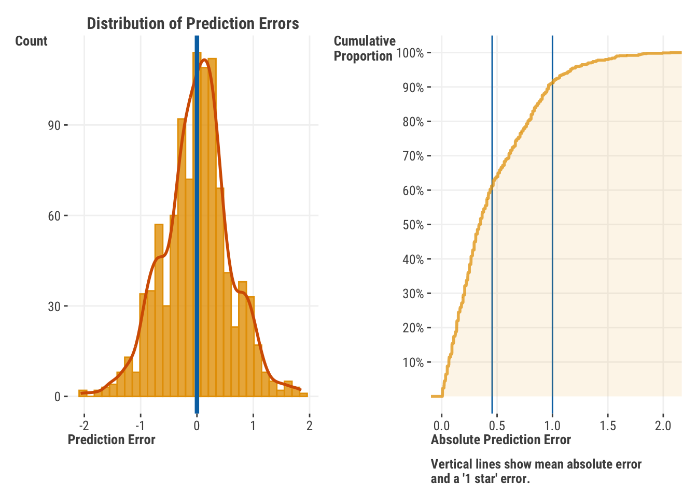
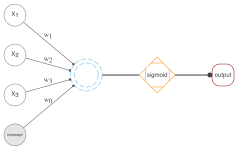

It is the chief characteristic of data science that it works. ― Isaac Asimov (paraphrased)
Now it’s time to dive into some modeling! We’ll start things off by covering the building block of all modeling, and a solid understanding here will provide you the basis for just about anything that comes after, no matter how complex it gets. The linear model is our starting point. At first glance, it may seem like a very simple model, and it is, relatively speaking. But it’s also quite powerful and flexible, able to take in different types of inputs, handle nonlinear relationships, temporal and spatial relations, clustering, and more. Linear models have a long history, with even the formal and scientific idea behind correlation and linear regression being well over a century old1! And in that time, the linear model is far and away the most used model out there. But before we start talking about the linear model, we need to talk about what a model is in general.
3.1 Key Ideas
To get us started, we can provide a few concepts key to understanding linear models. We’ll cover each of these as we go along.
The linear model is a foundation on which one can build an understanding for practically any other model.
It combines the strength of its inputs - features - to predict a target.
Prediction is fundamental to assessing and using a model.
There are many ways to interpret a model, at the feature level and as a whole.
It is rather easy to start building upon and adding complexity to a linear model.
All models come with assumptions, and it’s good to be aware of these.
The things you learn here will be useful in many other contexts - such as other types of models, for classification tasks, and more!
As we go along, be sure that you feel you have the ‘gist’ of what we’re talking about. Almost everything that goes beyond linear models builds on what’s introduced here, so it’s important to have a firm grasp before climbing to new heights.
3.1.1 Why this matters
The basic linear model and how it comes about underpins so many other models, from the simplest t-test to the most complex neural network. It provides a powerful foundation, and it is a model that you’ll see in many different contexts. It’s also a model that is relatively easy to understand, so it’s a great place to start!
3.1.2 Helpful context
We’re just starting out here, but we’re kind of assuming you’ve had some exposure to the idea of statistical or other models, even if only from an interpretation standpoint or visualizations of various relationships. We assume you have an understanding of basic stats like central tendency (e.g., a mean or median), variance, correlation, and stuff like that. And if you intend to get into the code examples, you’ll need a basic familiarity with Python or R.
3.2 The Linear Model
The linear model is perhaps the simplest functional model we can use to express a relationship between the features that serve as inputs, and the targets we hope to explain with them. And because of that, it’s possibly still the most common model used in practice, and it is the basis for many types of other models. So why don’t we do one now?
The following dataset has individual movie reviews containing the movie rating (1-5 stars scale), along with features pertaining to the review (e.g., word count), those that regard the reviewer (e.g., age) and features about the movie (e.g., genre, release year).
For our first linear model, we’ll keep things simple. Let’s predict the rating based on the word count of the review using a specific type of linear model called linear regression which, historically speaking, is probably the most common model ever used! We’ll use the lm() function in R and the ols() function in Python2 to fit the model. Both functions take a formula as the first argument, which, as we noted elsewhere (Section 2.3.3), is just a way of expressing the relationship between the features and target. The formula is displayed as y ~ x1 + x2 + ..., where y is the target name and x* are the feature names. We also need to specify what the data object is, typically a dataframe, where the features and target are found.
# all data found on github repodf_reviews =read_csv('https://tinyurl.com/moviereviewsdata')model_lr_rating =lm(rating ~ word_count, data = df_reviews)summary(model_lr_rating)
Call:
lm(formula = rating ~ word_count, data = df_reviews)
Residuals:
Min 1Q Median 3Q Max
-2.0648 -0.3502 0.0206 0.3352 1.8498
Coefficients:
Estimate Std. Error t value Pr(>|t|)
(Intercept) 3.49164 0.04236 82.4 <2e-16 ***
word_count -0.04268 0.00369 -11.6 <2e-16 ***
---
Signif. codes: 0 '***' 0.001 '**' 0.01 '*' 0.05 '.' 0.1 ' ' 1
Residual standard error: 0.591 on 998 degrees of freedom
Multiple R-squared: 0.118, Adjusted R-squared: 0.118
F-statistic: 134 on 1 and 998 DF, p-value: <2e-16
import numpy as npimport pandas as pdimport statsmodels.formula.api as smf# all data found on github repodf_reviews = pd.read_csv('https://tinyurl.com/moviereviewsdata')model_lr_rating = smf.ols('rating ~ word_count', data = df_reviews).fit()model_lr_rating.summary(slim =True)
OLS Regression Results
Dep. Variable:
rating
R-squared:
0.118
Model:
OLS
Adj. R-squared:
0.118
No. Observations:
1000
F-statistic:
134.1
Covariance Type:
nonrobust
Prob (F-statistic):
3.47e-29
coef
std err
t
P>|t|
[0.025
0.975]
Intercept
3.4916
0.042
82.431
0.000
3.409
3.575
word_count
-0.0427
0.004
-11.580
0.000
-0.050
-0.035
Notes: [1] Standard Errors assume that the covariance matrix of the errors is correctly specified.
OLS Regression Results
Dep. Variable:
rating
R-squared:
0.118
Model:
OLS
Adj. R-squared:
0.118
No. Observations:
1000
F-statistic:
134.1
Covariance Type:
nonrobust
Prob (F-statistic):
3.47e-29
coef
std err
t
P>|t|
[0.025
0.975]
Intercept
3.4916
0.042
82.431
0.000
3.409
3.575
word_count
-0.0427
0.004
-11.580
0.000
-0.050
-0.035
Notes: [1] Standard Errors assume that the covariance matrix of the errors is correctly specified.
For such a simple model as this linear regression is, we certainly have a lot to unpack here! Don’t worry, you’ll eventually come to know what it all means. But it’s nice to know how easy it is to get the results! For now we can just say that there’s a negative relationship between the word count and the rating (the -0.043), which means that we expect lower ratings with longer reviews. The output also tells us that the value regarding the relationship is statistically significant (P(>|t|) value is < .05).
Getting more into the details, we’ll start with the fact that the linear model posits a linear combination of the features. This is an important concept to understand, but really, a linear combination is just a sum of the features, each of which has been multiplied by some specific value. That value is often called a coefficient, or possibly weight, depending on the context, and will allow different features to have different contributions to the result. Those contributions reflect the amount and direction of the feature-target relationship. The linear model is expressed as (math incoming!):
\(b_0\) is the intercept, which is kind of like a baseline value or offset. If we had no features at all, it would just be the mean of the target.
\(b_1, b_2, ... b_n\) are the coefficients or weights for each feature.
But let’s start with something simpler. Let’s say you want to take a sum of several features. In math you would write it as:
\[
x_1 + x_2 + ... + x_n
\]
In this equation, \(x\) is the feature and \(n\) is the number identifier for the features, so \(x_1\) is the first feature (e.g., word count), \(x_2\) the second (e.g., movie release year), and so on. \(x\) is an arbitrary designation - you could use any letter, symbol you want, or even better would be the actual feature name. Now look at the linear model.
\[
y = x_1 + x_2 + ... + x_n
\]
In this case, the function is just a sum, something so simple we do it all the time. In the linear model sense though, we’re actually saying a bit more. Another way to understand that equation is that y is a function of x. We don’t show any coefficients here, i.e., the bs in our initial equation (Equation 3.1), but technically it’s as if each coefficient was equal to a value of 1. In other words, for this simple linear model, we’re saying that each feature contributes in an identical fashion to the target.
In practice, features will never contribute in the same ways, because they correlate with the target differently or are on different scales. So if we want to relate some features, \(x_1\) and \(x_2\), to target \(y\), we probably would not assume that they both contribute in the same way. For instance, we might assign more weight to \(x_1\) than \(x_2\), for whatever reason. In the linear model, this is expressed by multiplying each feature by a different coefficient or weight. So the linear model’s primary component is really just a sum of the features multiplied by their coefficients, i.e., a weighted sum. Each feature’s contribution to explaining or accounting for the target is proportional to its coefficient. So if we have a feature \(x_1\) and a coefficient \(b_1\), then the contribution of \(x_1\) to the target is \(b_1\cdot x_1\). If we have a feature \(x_2\) and a coefficient \(b_2\), then the contribution of \(x_2\) to the target is \(b_2 \cdot x_2\). And so on. So the linear model is really just a sum of the features multiplied by their respective weights.
For our specific model, here is the mathematical representation:
Not too complicated, we hope! But let’s make sure we see what’s going on here just a little bit more.
Our idea is that the length of the review in words is in some way related to the eventual rating given to the movie.
Our target is the movie’s rating by a reviewer, and the feature is the word count.
We map the feature to the target via the linear model, which provides an initial understanding of how the feature is related to the target. In this case, we start with a baseline of 3.49. This value makes sense only in the case of a rating with no review, and it is what we would guess if the word count was 0. But we know there are reviews for every observation, so it’s not very meaningful as is. We’ll talk about ways to get a more meaningful intercept later, but for now, that is our starting point. Moving on, if we add a single word to the review, we expect the rating to decrease by -0.04 stars. So if we had a review that was 10 words long, i.e., the mean word count, we would predict a rating of 3.49 + 10*-0.04 = 3.1 stars.
3.2.1 The linear model visualized
Given our single feature model, we can easily plot the relationship between the word count and the rating. Now we can visually see the negative or downward-sloping relationship.

Figure 3.1: Linear regression of rating vs. word count
We can also express the linear model as a graph or graphical model, which can be a very useful way to think about models in a visual fashion. As we come across other models, a visualization like this can help us see both how different models relate to one another and are actually very similar to one another. In the following example, we have three features predicting a single target, so we have three ‘nodes’ for the features, and a single node for the target. The feature nodes are combined into a linear combination to produce the output of the model. In the context of linear models, the initial combination is often called the linear predictor. Each ‘edge’ signifies the connection of a feature to the combined result and is labeled with the coefficient or weight. The connection between the linear predictor and final model output is direct, without any additional change from the linear predictor stage. This output will ultimately be compared to the observed target value to assess model performance. We’ll return to this depiction a little bit later in this chapter (Section 3.7), and other parts as well. But for our standard linear model, we’re all set.
Figure 3.2: Linear regression as a graphical model.
So at this point you have the basics of what a linear model is and how it works, and a couple ways to think about it, whether through programming, math, or just visually. But there is a lot more to it than that. Just getting the model is easy enough, but we need to be able to use it and understand the details better, so we’ll get into that now!
3.3 What Do We Do with a Model?
Once we have a working model, there are two primary ways we can use it. One way to use a model is to help us understand the relationships between the features and our outcome of interest. In this way, the focus can be said to be on explanation, or interpreting the model results. The other way to use a model is to make estimates about the target for specific observations, often ones we haven’t seen in our data. In this case, the focus is on prediction. In practice, we often do both, but the focus is usually on one or the other. We’ll cover both in detail eventually, but let’s start with prediction.
3.3.1 Prediction
A model’s utility often lies in its ability to make predictions about the world around us, and this depends fundamentally on the model’s ability to predict the target. Once our model has been fit to the data, we can obtain predictions by plugging in values for the features that we are interested in, and, using the corresponding weights and other parameters that have been estimated, come to a guess about a specific observation. Let’s go back to our results, shown in the following table.
Table 3.1: Linear Model Output
feature
estimate
std_error
statistic
p_value
conf_low
conf_high
intercept
3.49
0.04
82.43
0.00
3.41
3.57
word_count
−0.04
0.00
−11.58
0.00
−0.05
−0.04
Table 3.1 shows the coefficient for the feature and the intercept, which is our starting point. In this case, the coefficient for word count is -0.04, which means that for every additional word in the review, the rating goes down by -0.04 stars. So if we had a review that was 10 words long, we would predict a rating of 3.49 + **10*-0.04** = 3.1 stars.
When we’re talking about the predictions (or outputs) for a linear model, we usually will see this as the following mathematically:
What is \(\hat{y}\)? The ‘hat’ over the \(y\) just means that it’s a predicted, or ‘expected’, or estimated value of the model, i.e., the output. This distinguishes it from the target value we actually observe in the data. Our first equations that just used \(y\) implicitly suggested that we would get a perfect rating value given the model, but that’s not the case. We can only get an estimate. The \(\hat{y}\) in a linear regression is also the linear predictor in our graphical version (Figure 3.2), which makes clear it is not the actual target, but the output produced by a combination of the features related to the target.
To make our first equation (Equation 3.1) accurately reflect the relationship between the target and our features, we need to add what is usually referred to as an error term, \(\epsilon\), to account for the fact that our predictions will not be perfect3. So the full linear (regression) model is:
The error term is a random variable that represents the difference between the actual value and the predicted value, which comes from the weighted combination of features. We can’t know what the error term is, but we can estimate its values, often called residuals or just prediction errors, as well as parameters associated with it, just like we can the coefficients. We’ll talk more about that in the chapter on estimation (Chapter 6).
This makes explicit that the target is assumed to be conditionally normally distributed with a mean corresponding to the linear combination of the features, and a variance of \(\sigma^2\). What do we mean by conditionally? This means that, given the features and the estimated model parameters, the target follows a normal distribution (\(\mathrm{N}()\)). This is the standard assumption for linear regression, and it’s a good one to start with, but it’s not our only option. We’ll talk more about this later in this chapter (Section 3.6), and see what we might do differently in Chapter 8. We will also see that we can estimate the model parameters without any explicit reference to a probability distribution in Chapter 6.
Predictions by Any Other Name…
index{prediction!other names}You’ll often see predictions referred to as fitted values, but these imply we are only talking about the observed data features the model was trained on or ‘fit’ to. Predictions can also be referred to as expected values, estimates, outputs, or forecasts, the latter is especially common in time series analysis. Within generalized linear models and others where there may ultimately be a transformation of the output, you may see it referred to as a linear predictor.
3.3.2 What kinds of predictions can we get?
What predictions we can get depends on the type of model we are using. For the linear model we have at present, we can get predictions for the target, which is a continuous variable. Very commonly, we also can get predictions for a categorical target, such as whether the rating is ‘good’ or ‘bad’. This simple breakdown pretty much covers everything, as we typically would be predicting a continuous numeric variable or a categorical variable, or more of them, like multiple continuous variables, or a target with multiple categories, or sequences of categories (e.g., words).
In our case, we can get predictions for the rating, which is a number between 1 and 5. Had our target been a binary good vs. bad rating, our predictions would still be numeric for most models, and usually expressed as a probability between 0 and 1, say, for the ‘good’ category, or in an initial form that is then transformed to a probability. For example, in the context of predicting a good rating, higher probabilities would mean we’d more likely predict the movie is good, and lower probabilities would mean we’d more likely predict the movie is bad. We then would convert that probability to a class of good or bad depending on a chosen probability cutoff. We’ll talk about how to get predictions for categorical targets later4.
We previously saw a prediction for a single observation where the word count was 10 words, but we can also get predictions for multiple observations at once. In fact, we can get predictions for all observations in our data. Besides that, we can also get predictions for observations that we don’t even have data for, which is a very neat thing to be able to do! The following shows how we can get predictions for all data, and for a single observation with a word count of 55.
Here is a plot of our predictions for the observed data versus the actual ratings6. The reference line is where the points would fall if we had perfect prediction. We can see that the predictions are definitely not perfect, but we don’t expect this. They are not completely off-base either, in that generally higher predicted scores are associated with higher observed values. We’ll talk about how to assess the quality of our predictions later, but we can at least get a sense that we have a correspondence between our predictions and target, which is definitely better than not having a relationship at all!
Figure 3.3: Predicted vs. observed ratings.
We saw what our prediction looks like for a single observation, and now we’ll add in a few more: one for a review of 10 words, and one for 50 words, which is beyond the length of any review in this dataset, and one for 12.3 words, which isn’t even possible for this data, since words are only counted as whole values. To get these values, we just use the same prediction approach as before, and we specify the word count value we want to predict for.
Table 3.2: Predictions for Specific Observations
Word Count
Predicted Rating
5.0
3.3
10.0
3.1
12.3
3.0
50.0
1.4
The values reflect the negative coefficient from our model, showing decreasing ratings with increasing word counts. Furthermore, we see the power of the model’s ability to make predictions for what we don’t see in the data. Maybe we limited our data review size, but we know there are reviews with 50 or more words out there, and we can still make a guess as to what the rating would be for such a review. Maybe in another case, we know a group of people who have on average reviews of 12.3 words, and we can make a guess as to what the predicted rating would be for that group. Our model doesn’t literally know anything about the context of the data, but we can use our knowledge to make predictions that are meaningful to us. This is a very powerful capability, and it’s one of the main reasons we use models in the first place.
3.3.3 Prediction error
As we have seen, predictions are not perfect, and an essential part of the modeling endeavor is to better understand these errors and why they occur. In addition, error assessment is the fundamental way in which we assess a model’s performance, and, by extension, compare that performance to other models. In general, prediction error is the difference between the actual value and the predicted value or some function of it. In statistical models, it is also often called the residual. We can look at these individually, or we can look at them in aggregate with a single metric.
Let’s start with looking at the residuals visually. Often the modeling package you use will have this as a default plotting method when doing a standard linear regression, so it’s wise to take advantage of it. We plot both the distribution of raw error scores and the cumulative distribution of absolute prediction error. Here we see a couple of things. First, the distribution appears roughly normal, which is a good thing, since statistical linear regression assumes our error is normally distributed, and the prediction error serves as an estimate of that. Second, we see that the mean of the errors is zero, which is a property of linear regression, and the reason we look at other metrics besides a simple ‘average error’ when assessing model performance. We can also see that our average absolute error is around 0.5, most of our predictions (>90%) are within ±1 star rating.

Figure 3.4: Distribution of prediction errors.
Of more practical concern is that we don’t see extreme values or clustering, which might indicate a failure on the part of the model to pick up certain segments of the data. It can still be a good idea to look at the extremes just in case we can pick up on some aspect of the data that we could potentially incorporate into the model. So looking at our worst prediction in absolute terms, we see the observation has a typical word count, and so our simple model will just predict a fairly typical rating. But the actual rating is 1, which is 2.1 away from our prediction, a very noticeable difference. Further data inspection may be required to figure out why this came about, and this is a process you should always be prepared to do when you’re working with models.
Table 3.3: Worst Prediction
rating
prediction
word_count
1.0
3.1
10
3.3.4 Prediction uncertainty
We can also look at the uncertainty of our predictions, which is a measure of how much we expect our predictions to vary. Not only are they off from the observed value, but also our predictions themselves are just a guess based on the data we have, and we’d like to know how much we can trust them.
This trust is often expressed as an interval range of values that we expect our prediction to fall within, with a certain level of confidence. But! There are actually two types of intervals we can get. One is really about the mean prediction, or expected value we would get from the model at that observation. This is usually called a confidence interval. The other type of interval is based on the model’s ability to predict new data, and it is typically called a prediction interval. This interval is about the actual prediction we would get from the model for any value, whether it was data we had seen before or not. Because of this, the prediction interval is always wider than the confidence interval, and it’s the one we usually want to use when we’re making predictions about new data.
prediction_CI =predict( model_lr_rating, newdata = df_prediction, se.fit =TRUE, # standard error of the fitinterval ='confidence')prediction_PI =predict( model_lr_rating, newdata = df_prediction, se.fit =TRUE, interval ='prediction')pred_intervals =bind_rows(as_tibble(prediction_CI$fit),as_tibble(prediction_PI$fit),) |>mutate(interval =c('confidence', 'prediction'),type =c('mean', 'observation'))pred_intervals
# contains both confidence ('mean_') and prediction ('obs_') intervalspred_intervals = ( model_lr_rating .get_prediction(df_prediction) .summary_frame(alpha =0.05))pred_intervals
Table 3.4: Prediction Intervals for Specific Observations
interval
type
fit
lwr
upr
confidence
mean
3.28
3.23
3.33
prediction
observation
3.28
2.12
4.44
As expected, our prediction interval is wider than our confidence interval, and we can see that the prediction interval is quite wide: from a rating of 2.1 to 4.4. This is a consequence of the fact that we have a lot of uncertainty in our predictions for new observations, and we can’t expect to get a very precise prediction from our model with only one feature. This is a common issue with many models, and one that having a better model can help remedy. We can also plot these intervals across a range of values to get a better sense of what they look like. Let’s do so for all observed word counts.
Figure 3.5: Prediction and confidence intervals compared.
Once you move past simpler linear models and generalized linear models, obtaining uncertainty estimates for predictions is difficult, and tools to do so can be scarce. This is especially the case for models used in machine learning contexts, and relatively rare for deep learning approaches. In practice, you can use bootstrapping (Section 7.5) to get a sense of the uncertainty, but this is often not a good estimate in many data scenarios and can be computationally expensive. Bayesian approaches (Section 7.6) can also provide estimates of uncertainty, but likewise are computationally expensive, and require a good deal of expertise to implement for more complex settings. Quantile regression (Section 9.5) can sometimes be appropriate to estimate predictions at different quantiles that can serve as a proxy for prediction intervals, but tools to do so for various models are uncommon. On the other hand, conformal prediction tools are becoming more popular, and they can provide a more reliable estimate of prediction uncertainty for any type of model. Yet they too are computationally expensive for more accurate estimates, and good tools are only recently becoming available7.
So at this point you have the gist of prediction, prediction error, and uncertainty in a prediction, but there is still more to modeling! We’ll come back to global assessments of model error very shortly, and even more detail can be found in Chapter 4 where we dive deeper into our models and how they work, and Chapter 6, where we see how to estimate the parameters of our model by picking those that will reduce the prediction error the most. For now though, let’s move on to the other main use of models, explanation, where the focus is on understanding the relationships between the features and the target.
3.4 How Do We Interpret the Model?
When it comes to interpreting the results of our model, there are a lot of tools at our disposal, though many of the tools we can ultimately use will depend on the specifics of the model we have employed. In general though, we can group our approach to understanding results at the feature level and the model level. A feature-level understanding regards the relationship between a single feature and the target. Beyond that, we also attempt comparisons of feature contributions to prediction, i.e., relative importance. Model-level interpretation is focused on assessments of how well the model ‘fits’ the data, or more generally, predictive performance. We’ll start with the feature level, and then move on to the model level.
3.4.1 Feature-level interpretation
As mentioned, at the feature level, we are primarily concerned with the relationship between a single feature and the target, for whatever features are of interest. More specifically, we are interested in the direction and magnitude of the relationship, but in general, it all boils down to how a feature induces change in the target. For numeric features, we are curious about the change in the target given some amount of change in the feature values. It’s conceptually the same for categorical features, but often we like to express the change in terms of group mean differences or something similar, since the order of categories is not usually meaningful. An important aspect of feature-level interpretation is the specific predictions we can get by holding the data at key feature values.
Let’s start with the basics by looking again at our coefficient table from the model output.
Table 3.5: Linear Regression Coefficients
feature
estimate
std_error
statistic
p_value
conf_low
conf_high
intercept
3.49
0.04
82.43
0.00
3.41
3.57
word_count
−0.04
0.00
−11.58
0.00
−0.05
−0.04
Here, the main thing to look at is both the actual feature coefficient values and the direction of their relationship, positive or negative. The coefficient for word count is -0.04, and this means that for every additional word in the review, the rating goes down by -0.04. This interpretation gives us directional information, but how can we interpret the magnitude of the coefficient?
Let’s try and use some context to help us. While a drop of -0.04 might not mean much to us in terms of ratings, we might not be as sure about a change in one word for a review. However, we do know the standard deviation of the rating score, i.e., how much it moves around naturally on its own, is 0.63. So the coefficient is about 6% of the standard deviation of the target. In other words, the addition of a single word to a review results in an expected decrease of 6% of what the review would normally bounce around in value. We might not consider this large, but also, a single word change isn’t much. What would be a significant change in word count? Let’s consider the standard deviation of the feature. In this case, it’s 5.1 for word count. So if we increase the word count by one standard deviation, we expect the rating to decrease by -0.04 * 5.1 = -0.2. That decrease then translates to a change of -0.2/0.63 = -0.32 standard deviation units of the target. Without additional context, many would think that’s a significant change8, or at the very least, that the coefficient is not negligible, and that the feature is indeed related to the target. But we can also see that the coefficient is not so large that it’s not believable in this context.
Standardized Coefficients
The calculation we just did results in what’s often called a standardized or ‘normalized’ coefficient. In the case of the simplest model with only one feature like this, it is identical to the Pearson r correlation metric, which we invite you to check and confirm on your own. In the case of multiple features, it represents a (partial) correlation between the target and the feature, after adjusting for the other features. But before you start thinking of it as a measure of importance, it is not. It provides some measure of the feature-target linear relationship, but that does not entail practical importance, nor is it useful in the presence of nonlinear relationships, interactions, and a host of other interesting things that are typical to data and models.
After assessing the coefficients, next up in our table is the standard error. The standard error is a measure of how much the coefficient varies from sample to sample. If we collected the data multiple times, even under practically identical circumstances, we wouldn’t get the same value each time. The value would bounce around a bit, and the standard error is an estimate of how much it would bounce around. In other words, the standard error is a measure of uncertainty, and along with the coefficients, it’s used to calculate everything else in the table.
Table 3.6: Linear Regression Statistical Output
feature
estimate
std_error
statistic
p_value
conf_low
conf_high
intercept
3.49
0.04
82.43
0.00
3.41
3.57
word_count
−0.04
0.00
−11.58
0.00
−0.05
−0.04
The statistic, here a t-statistic from the Student t-distribution9, is the ratio of the coefficient to the standard error. This gives us a sense of the effect relative to its variability, but the statistic’s primary use is to calculate the p-value related to its distribution10, which is the probability of seeing a coefficient as large (or larger) as the one we have, if we assume from the outset that the true value of the coefficient is zero, and the model assumptions are true as well. In this case, the p-value is 3.47e-29, which is extremely small. We can conclude that the coefficient is statistically different from zero, and that the feature is related to the target, at least statistically speaking. However, the interpretation we used regarding the coefficient previously is far more useful than the p-value, as the p-value can be affected by many things not necessarily related to the feature-target relationship, such as sample size.
Aside from the coefficients, the most important output is the confidence interval (CI). The CI is a range of values that encapsulates the uncertainty we have in our guess about the coefficients. While our best guess for the effect of word count on rating is -0.04, we know it’s not exactly that, and the CI gives us a range of reasonable values we might expect the effect to be based on the data at hand and the model we’ve employed.
Table 3.7: Linear Regression Confidence Intervals
feature
estimate
std_error
statistic
p_value
conf_low
conf_high
intercept
3.49
0.04
82.43
0.00
3.41
3.57
word_count
−0.04
0.00
−11.58
0.00
−0.05
−0.04
In this case, the default is a 95% confidence interval, and we can think of this particular confidence interval like throwing horseshoes. If we kept collecting data and running models, 95% of our CIs would capture the true value, and this is one of the many possible CIs we could have gotten. That’s the technical definition, which is a bit abstract11, but we can also think of it more simply as a range of values that are good guesses for the true value, whatever it may be. In this case, the CI is -0.05 to -0.035 with 95% confidence. We can also see that the CI is relatively narrow, which is also nice to see, as it implies that we have a good idea of what the coefficient is. If it was very wide, we would have a lot of uncertainty about the coefficient, and we may not want to base important decisions regarding it.
Two Confidence Intervals
Keep in mind that your chosen model has a great influence on what you’ll be able to say at the feature level. As an example, as we get into machine learning models, you won’t have as easy a time with coefficients and their confidence intervals, but you still may be able to say something about how your features relate to the target, and we’ll continue to return to the topic. But first, let’s take a look at interpreting things in another way.
Hypothesis Testing
The confidence interval and p-value will for coefficients in typical statistical linear models will coincide with one another in that, for a given alpha significance level, if the 1-alpha% CI includes zero, then your p-value will be greater than alpha, and vice versa. This is because the same standard error is used to calculate both. However, the framework of using a CI vs. using the p-value for claiming statistical significance actually came from individuals that were philosophically opposed. Modern-day usage of both is a bit of a mess that would upset both Fisher (p-value guy) and Neyman (CI guy), but your authors find that this incorrect practical usage doesn’t make much practical difference in the end.
3.4.2 Model-level interpretation
So far, we’ve focused on interpretation at the feature level. But knowing the interpretation of a feature doesn’t do you much good if the model itself is poor! In that case, we also need to assess the model as a whole, and as with the feature level, we can go about this in a few ways. Before getting too carried away with asking whether your model is any good or not, you always need to ask yourself relative to what? Many models claim top performance under various circumstances, but which are statistically indistinguishable from many other models. So we need to be careful about how we assess our model, and what we compare it to.
Predictions vs. observed
When we looked at the models previously in Figure 3.3, we examined how well the predictions and target line up, and that gave us an initial feel for how well the model fits the data. Most model-level interpretation involves assessing and comparing model fit and variations on this theme. Here we show how easy it is to obtain such a plot.
predictions =predict(model_lr_rating)y = df_reviews$ratingggplot(data =data.frame(y = y, predictions = predictions), aes(x = y, y = predictions)) +geom_point() +labs(x ='Predicted', y ='Observed')
import matplotlib.pyplot as pltpredictions = model_lr_rating.predict()y = df_reviews.ratingplt.scatter(y, predictions)
Model metrics
We can also get an overall assessment of the prediction error from a single metric. In the case of the linear model we’ve been looking at, we can express this as the sum or mean of our squared errors, the latter of which is a very commonly used modeling metric: MSE or mean squared error . Its square root, RMSE or root mean squared error12, is also very commonly used. We’ll talk more about this and similar metrics elsewhere (Section 4.2), but we can take a look at the RMSE for our model now.
If we look back at our results, we can see this expressed as the part of the output or as an attribute of the model13. The RMSE is more interpretable, as it gives us a sense that our typical errors bounce around by about 0.59. Given that the rating is on a 1-5 scale, this maybe isn’t bad, but we could definitely hope to do better than get within roughly half a point on this scale. We’ll talk about ways to improve this later.
# summary(model_lr_rating) # 'Residual standard error' is approx RMSEsummary(model_lr_rating)$sigma # We can extract it directly
[1] 0.5907
np.sqrt(model_lr_rating.scale) # RMSE
0.590728780660127
Another metric we can use to assess model fit in this particular situation is the mean absolute error(MAE). MAE is similar to the mean squared error, but instead of squaring the errors, we just take the absolute value. Conceptually it attempts to get at the same idea, how much our predictions miss the target on average, and here the value is 0.46, which we actually showed in our residual plot (Figure 3.4). With either metric, the closer to zero the better, since as we get closer, we are reducing prediction error.
We can also look at the R-squared (R2) value of the model. R2 is possibly the most popular measure of model performance with linear regression and linear models in general. Before squaring, it’s just the correlation of the predicted versus observed values that we saw in the previous plot (Figure 3.3). When we square it, we can interpret it as a measure of how much of the variance in the target is explained by the model. In this case, our model shows the R2 is 0.12, which is not bad for a single feature model in this type of setting. We interpret the value as 12% of the target variance is explained by our model, and more specifically by the features in the model. In addition, we can also interpret R2 as 1 - the proportion of error variance in the target, which we can calculate as \(1 - \frac{\textrm{MSE}}{var(y)}\). In other words the complement of R2 is the proportion of the variance in the target that is not explained by the model. Either way, since 88% is not explained by the model, our result suggests there is plenty of work left to do!
Note also, that with R2 we get a sense of the variance shared between all features in the model and the target, however complex the model gets. As long as we use it descriptively as a simple correspondence assessment of our predictions and target, it’s a fine metric. For various reasons, it’s not a great metric for comparing models to each other, but again, as long as you don’t get carried away, it’s okay to use.
3.4.3 Prediction vs. explanation
In your humble authors’ views, one can’t stress enough the importance of a model’s ability to predict the target. It can be a poor model, maybe because the data is not great, or perhaps we’re exploring a new area of research, but we’ll always be interested in how well a model fits the observed data. In situations where we’re focused on how things will work out in the future, we’re just as much or even more interested in how well a model predicts new data.
In many settings, statistical significance is focused on a great deal, and much is made about models that may actually have little predictive power. As strange as it may sound to some, you can read results in journal articles, news features, and business reports in many fields with hardly any mention of a model’s predictive capability. In these cases, the focus is almost entirely on the explanation of the model, and usually the statistical significance of the features with regard to their relationship to the target.
In those settings, statistical significance is often used as a proxy for importance, though this is rarely ever justified. As we’ve noted elsewhere, statistical significance is affected by other things besides the size of the coefficient. And without an understanding of the context of the features, in this case, like how long typical reviews are, what their range is, what variability of ratings is, etc., the information it provides is extremely limited, and many would argue, not very useful.
If we are very interested in the coefficient or weight value specifically, it is better to focus on the range of possible values. This is provided by the confidence interval, along with the predictions that come about based on that coefficient’s value, which will likewise have interval estimates. Like statistical significance, a confidence interval is also a ‘loaded’ description of a feature’s relationship to the target, not without issues. However, we can use it in a very practical way as a range of possible values for that feature’s weight, and more importantly, think of possibilities rather than certainties.
Suffice it to say at this point, that how much one focuses on prediction versus explanation depends on the context and goals of the data endeavor. There are cases where predictive capability is of utmost importance, and we care less about explanatory details, but not to the point of ignoring it. For example, even with deep learning models for image classification, where the inputs are just RGB values from an image, we’d still like to know what the (notably complex) model is picking up on. Otherwise, we may be classifying images based on something like image backgrounds (e.g., outdoors vs. indoors) instead of the objects of actual interest (dogs vs. cats). In some business or other organizational settings, we are very, or even mostly, interested in the coefficients/weights, which might indicate how to allocate monetary resources in some fashion. But if those weights come from a model with no predictive power, placing much importance on them may be a fruitless endeavor.
In the end we’ll need to balance our efforts to suit the task at hand. Prediction and explanation are both fundamental to the modeling endeavor. We return to this topic again in Chapter 13 (Section 13.2).
3.5 Adding Complexity
We’ve seen how to fit a model with a single feature and interpret the results, and that helps us to get oriented to the general process when using a linear model. However, we’ll always have more than one feature for a model except under some very specific circumstances, such as exploratory data analysis. So let’s see how we can implement a model with more features and that makes more practical sense.
3.5.1 Multiple features
We can add more features to our model very simply. Using the standard functions we’ve already demonstrated, we just add them to the formula as follows14.
'y ~ feature_1 + feature_2 + feature_3'
In other cases where we use matrix inputs, additional features will just be the additional input columns, and nothing conceptually about the model actually changes.
# X are features, y is the targetGenericModel(X, y)
We might have a lot of features, and even for relatively simple linear models this could be dozens in some scenarios. A compact depiction of our model uses matrix representation, which we’ll show in the next callout, but you can find more detail in the matrix overview Appendix B. For our purposes with a standard linear model, all you really need to know is that this formula:
\[
y = X\beta + \epsilon \qquad \textrm{or} \qquad y = \alpha + X\beta + \epsilon
\tag{3.6}\]
where \(y\) is the target, \(X\) is a 2-d matrix of features15, where the rows are observations/instances and columns features, and \(\beta\) is a vector of coefficients or weights corresponding to the number of columns in \(X\). Matrix multiplication provides us an efficient way to get our expected value/prediction, and depicting the model in this way is a common practice that makes it more succinct.
Matrix Representation of a Linear Model
Here we’ll show the matrix representation form of the linear model in more detail. In the following, \(y\) is a vector of all target observations, and \(X\) is a matrix of features. The \(\beta\) vector is the vector of coefficients. The column of 1s serves as a means to incorporate the intercept, as it’s just multiplied by whatever the estimated intercept value is. Matrix multiplication form can be seen as an efficient way to get the sum of the features multiplied by their coefficients.
Here is \(y\) as a vector of observations, \(n \times 1\).
You will also see it depicted in a transposed fashion, such that \(y = \beta^\intercal X\), or \(f(x) = w^\intercal X + b\), with the latter formula typically seen in the context of machine learning. This is just a matter of preference, except that it may assume the data is formatted in a different way, or possibly an author is talking about matrix/vector operations for a single observation. You’ll want to pay close attention to what the dimensions are.
For the models considered here and almost all ‘tabular data’ scenarios, the data is stored in the fashion we’ve represented in this text, but you should be aware that other data settings will force you to think of multi-dimensional arrays16 instead of 2-d matrices, for example, with image processing. So it’s good to be flexible.
With that in mind, let’s get to our model! In what follows, we keep the word count, but now we add some aspects of the reviewer, such as age and the number of children in the household, and features related to the movie, like the release year, the length of the movie in minutes, and the total reviews received. We’ll use the same approach as before, and literally just add them as we depicted in our linear model formula (Equation 3.3).
Call:
lm(formula = rating ~ word_count + age + review_year + release_year +
length_minutes + children_in_home + total_reviews, data = df_reviews)
Residuals:
Min 1Q Median 3Q Max
-1.8231 -0.3399 0.0107 0.3566 1.5144
Coefficients:
Estimate Std. Error t value Pr(>|t|)
(Intercept) -4.56e+01 7.46e+00 -6.11 1.5e-09 ***
word_count -3.03e-02 3.33e-03 -9.10 < 2e-16 ***
age -1.69e-03 9.24e-04 -1.83 0.0683 .
review_year 9.88e-03 3.23e-03 3.05 0.0023 **
release_year 1.33e-02 1.79e-03 7.43 2.3e-13 ***
length_minutes 1.67e-02 1.53e-03 10.90 < 2e-16 ***
children_in_home 1.03e-01 2.54e-02 4.05 5.5e-05 ***
total_reviews 7.62e-05 6.16e-06 12.36 < 2e-16 ***
---
Signif. codes: 0 '***' 0.001 '**' 0.01 '*' 0.05 '.' 0.1 ' ' 1
Residual standard error: 0.52 on 992 degrees of freedom
Multiple R-squared: 0.321, Adjusted R-squared: 0.316
F-statistic: 67 on 7 and 992 DF, p-value: <2e-16
model_lr_rating_extra = smf.ols( formula ='rating ~ word_count \ + age \ + review_year \ + release_year \ + length_minutes \ + children_in_home \ + total_reviews', data = df_reviews).fit()model_lr_rating_extra.summary(slim =True)
OLS Regression Results
Dep. Variable:
rating
R-squared:
0.321
Model:
OLS
Adj. R-squared:
0.316
No. Observations:
1000
F-statistic:
67.02
Covariance Type:
nonrobust
Prob (F-statistic):
3.73e-79
coef
std err
t
P>|t|
[0.025
0.975]
Intercept
-45.5688
7.463
-6.106
0.000
-60.215
-30.923
word_count
-0.0303
0.003
-9.102
0.000
-0.037
-0.024
age
-0.0017
0.001
-1.825
0.068
-0.004
0.000
review_year
0.0099
0.003
3.055
0.002
0.004
0.016
release_year
0.0133
0.002
7.434
0.000
0.010
0.017
length_minutes
0.0167
0.002
10.897
0.000
0.014
0.020
children_in_home
0.1028
0.025
4.051
0.000
0.053
0.153
total_reviews
7.616e-05
6.16e-06
12.362
0.000
6.41e-05
8.83e-05
Notes: [1] Standard Errors assume that the covariance matrix of the errors is correctly specified. [2] The condition number is large, 2.82e+06. This might indicate that there are strong multicollinearity or other numerical problems.
OLS Regression Results
Dep. Variable:
rating
R-squared:
0.321
Model:
OLS
Adj. R-squared:
0.316
No. Observations:
1000
F-statistic:
67.02
Covariance Type:
nonrobust
Prob (F-statistic):
3.73e-79
coef
std err
t
P>|t|
[0.025
0.975]
Intercept
-45.5688
7.463
-6.106
0.000
-60.215
-30.923
word_count
-0.0303
0.003
-9.102
0.000
-0.037
-0.024
age
-0.0017
0.001
-1.825
0.068
-0.004
0.000
review_year
0.0099
0.003
3.055
0.002
0.004
0.016
release_year
0.0133
0.002
7.434
0.000
0.010
0.017
length_minutes
0.0167
0.002
10.897
0.000
0.014
0.020
children_in_home
0.1028
0.025
4.051
0.000
0.053
0.153
total_reviews
7.616e-05
6.16e-06
12.362
0.000
6.41e-05
8.83e-05
Notes: [1] Standard Errors assume that the covariance matrix of the errors is correctly specified. [2] The condition number is large, 2.82e+06. This might indicate that there are strong multicollinearity or other numerical problems.
There is definitely more to unpack here than our simpler model, but it’s important to note that it’s just more stuff, not different stuff. The model-level components are the same in that we still see R2, etc., although they are all ‘better’ (higher R2, lower error) because we have a model that more accurately predicts the observed target.
Our coefficients have the same output, and though they are on different scales we’d interpret them in the same way. Starting with word count, we see that it’s still statistically significant, but it has been reduced just slightly from our previous model where it was the only feature (-0.04 vs. -0.03). Why? This suggests that word count has some non-zero correlation, sometimes called collinearity, with other features that are also explaining the target to some extent. Our linear model shows the effect of each feature controlling for other features, or, holding other features constant, or adjusted for other features17. Conceptually this means that the effect of word count is the effect of word count after we’ve accounted for the other features in the model. In this case, an increase of a single word results in a -0.03 drop, even after adjusting for the effect of other features. Looking at another feature, the addition of a child to the home is associated with 0.1 increase in rating, again, accounting for the other features.
Features Scales Again
The scales of the features are quite different, so we can’t directly compare the coefficients. For example, the word count coefficient represents a movement of 1 word, and coefficient for release year represents a movement of 1 year. One way to get a better comparison is to standardize the features as we talked about previously (Section 3.4.1), and which we’ll talk about more in the data chapter (Section 14.2) and elsewhere.
Thinking about prediction, how would we get a prediction for a movie rating with a review that is 12 words long, written in 2020, by a 30-year-old with one child, for a movie that is 100 minutes long, released in 2015, with 10,000 total reviews? Exactly the same as we did before (Section 3.3.2)! We just create a dataframe with the values we want, and we predict accordingly.
In our example we’re just getting a single prediction, but don’t let that hold you back! As we did before, you can predict an entire dataset if you want and use any values for the features you want. Feel free to try a different prediction of your choosing!
3.5.2 Categorical features
Categorical features can be added to a model just like any other feature. The main issue is that they have to be represented numerically, because models only work on numerically coded features and targets. The simplest and most common encoding is called a one-hot encoding scheme, which creates a new feature column for each category, and assigns a 1 if the observation has that category label, and a 0 otherwise. This is also called dummy coding when used for statistical models. Here is an example of what the coding looks like for the season feature. This is really all there is to it.
Table 3.8: One-Hot Encoding of the Season Feature
rating
season
Fall
Summer
Winter
Spring
2.70
Fall
1
0
0
0
4.20
Fall
1
0
0
0
3.70
Fall
1
0
0
0
2.70
Fall
1
0
0
0
2.40
Summer
0
1
0
0
4.00
Summer
0
1
0
0
1.80
Fall
1
0
0
0
2.40
Summer
0
1
0
0
2.50
Winter
0
0
1
0
4.30
Summer
0
1
0
0
When using statistical models we don’t have to do this ourselves. Even other tools for machine learning models will typically have a way to identify and appropriately handle categorical features, even in very complex ways when it comes to deep learning models. What is important is to be aware that they require special handling, even if this is done behind the scenes. Now let’s do a quick example using a categorical feature with our data, and we’ll keep a numeric feature as well just for consistency.
Call:
lm(formula = rating ~ word_count + season, data = df_reviews)
Residuals:
Min 1Q Median 3Q Max
-1.9184 -0.3622 0.0133 0.3589 1.8372
Coefficients:
Estimate Std. Error t value Pr(>|t|)
(Intercept) 3.3429 0.0530 63.11 < 2e-16 ***
word_count -0.0394 0.0036 -10.96 < 2e-16 ***
seasonSpring -0.0301 0.0622 -0.48 0.63
seasonSummer 0.2743 0.0445 6.17 9.8e-10 ***
seasonWinter -0.0700 0.0595 -1.18 0.24
---
Signif. codes: 0 '***' 0.001 '**' 0.01 '*' 0.05 '.' 0.1 ' ' 1
Residual standard error: 0.572 on 995 degrees of freedom
Multiple R-squared: 0.176, Adjusted R-squared: 0.173
F-statistic: 53.1 on 4 and 995 DF, p-value: <2e-16
model_lr_cat = smf.ols( formula ='rating ~ word_count + season', data = df_reviews).fit()model_lr_cat.summary(slim =True)
OLS Regression Results
Dep. Variable:
rating
R-squared:
0.176
Model:
OLS
Adj. R-squared:
0.173
No. Observations:
1000
F-statistic:
53.09
Covariance Type:
nonrobust
Prob (F-statistic):
1.41e-40
coef
std err
t
P>|t|
[0.025
0.975]
Intercept
3.3429
0.053
63.109
0.000
3.239
3.447
season[T.Spring]
-0.0301
0.062
-0.483
0.629
-0.152
0.092
season[T.Summer]
0.2743
0.044
6.171
0.000
0.187
0.362
season[T.Winter]
-0.0700
0.059
-1.177
0.239
-0.187
0.047
word_count
-0.0394
0.004
-10.963
0.000
-0.047
-0.032
Notes: [1] Standard Errors assume that the covariance matrix of the errors is correctly specified.
OLS Regression Results
Dep. Variable:
rating
R-squared:
0.176
Model:
OLS
Adj. R-squared:
0.173
No. Observations:
1000
F-statistic:
53.09
Covariance Type:
nonrobust
Prob (F-statistic):
1.41e-40
coef
std err
t
P>|t|
[0.025
0.975]
Intercept
3.3429
0.053
63.109
0.000
3.239
3.447
season[T.Spring]
-0.0301
0.062
-0.483
0.629
-0.152
0.092
season[T.Summer]
0.2743
0.044
6.171
0.000
0.187
0.362
season[T.Winter]
-0.0700
0.059
-1.177
0.239
-0.187
0.047
word_count
-0.0394
0.004
-10.963
0.000
-0.047
-0.032
Notes: [1] Standard Errors assume that the covariance matrix of the errors is correctly specified.
We now see the usual output. There is word count again, with its slightly negative association with rating. And we have an effect for each season as well… except, wait a second, where is the fall effect? The coefficients are interpreted the same way. As we move one unit on x, we see a corresponding change in y. But moving from one category to another requires starting at some category in the first place: a reference point. So one category is chosen arbitrarily, but you would have control over this. In our model, ‘fall’ is chosen just because it is first alphabetically. So if we look at, for example, the effect of summer, we see an increase in the rating of 0.27 relative to fall. The same goes for the other seasons, as they all represent a change relative to fall.
Recall also that an interpretation of the intercept is the expected value of the target when all features are zero. In this case, it’s the expected value of the target when the word count is zero and the season is fall.
3.5.2.1 Summarizing categorical features
When we have a lot of categories, it’s often not practical to look at the coefficients for each one, and even when there aren’t that many, we often prefer to get a sense of the total effect of the feature. For standard linear models, we can break down the target variance explained by the model into the variance explained by each feature, and this is called the ANOVA, or analysis of variance18. It is not without its issues, but it’s one way to get a sense of whether a categorical (or other) feature as a whole is statistically significant.
import statsmodels.api as smsm.stats.anova_lm(model_lr_cat)
Table 3.9: ANOVA Table for Categorical Feature
Feature
DF
sumsq
meansq
F-stat.
p.value
word_count
1.00
46.80
46.80
143.02
< 0.001
season
3.00
22.69
7.56
23.12
< 0.001
Residuals
995.00
325.57
0.33
A primary reason to use ANOVA is to make these sorts of summary claims of statistical significance. In this case, we can say that the relationship of season to rating is statistically significant. From Table 3.9, the DF (degrees of freedom) represents the number of categories minus 1, and the F-statistic is a measure of the mean squared variance explained by the feature relative to the (mean squared) variance not explained by the feature (F = mean square value divided by mean square error, or residual variance). The p-value is the probability of observing an F-statistic as extreme as the one observed, given that the null hypothesis is true. In this case, the null hypothesis is that the feature has no effect on the target. The p-value is less than 0.001, so we reject the null hypothesis and conclude that the observed feature-target relationship is statistically different from an assumption of no relationship. Note that nothing here is different from what we saw in our previous regression models, and we can run an anova function on those too19. As a final note, it’s good to be reminded that statistical significance is not the same as practical significance. Whether these group differences are meaningful is still left to be decided by the modeler given the context of the data.
3.5.2.2 Group predictions
A better approach to understanding categorical features for standard linear models is through what are called marginal effects, which can provide a kind of average prediction for each category while accounting for the other features in the model. Better still is to visualize these. It’s actually tricky to define ‘average’ when there are multiple features and interactions involved, so be more cautious in those contexts. In this case, we expect the highest ratings for summer releases. We’ll return more to this concept in Section 5.5.
Figure 3.6: Marginal Effects of Season on Rating
3.5.3 Other model complexities
There are a lot more fun things we can do while still employing a linear model. We can add interactions between features, account for non-linear relationships, and enhance the linear model we’ve seen to improve predictions. We’ll talk more about these types of techniques throughout the rest of the book.
3.6 Assumptions and More
Every model you use has underlying assumptions which, if not met, could potentially result in incorrect inferences about the effects, performance, or predictive capabilities of the model. These are assumptions about the data generating process, the stability of the data, the correctness of the data, the appropriateness of the model, and so on.
The standard linear regression model we’ve come to know is no different, and it has a number of assumptions that must be met for it to be statistically valid. Briefly, they are:
The model is not grossly misspecified (e.g., you’ve included the right features and not left out important ones)
The data that you’re modeling reflects the population you want to make generalizations about
The model is linear in the parameters (i.e., no \(e^\beta\) or \(\beta_1 \cdot beta_2 \cdot X\) type stuff)
The features are not correlated with the error (prediction errors, unobserved causes)
Your data observations are independent of each other
The prediction errors are homoscedastic (e.g., some predictions aren’t associated with very large errors relative to others)
Normality of the errors (i.e., your prediction errors). Another way to put it is that your target variable is normally distributed conditional on the features.
A linear regression model does not assume that:
The features are normally distributed
For example, using categorical features is fine
The target is normally distributed
The assumed target distribution is conditional on the features, the target (so-called marginal) distribution can be whatever it is
The relationship between the features and target is linear
Interactions, polynomial terms, etc. are all fine
The features are not correlated with each other
They usually are
If you do meet these assumptions, it doesn’t mean that:
You have large effects
You have a well-performing model
You have causal effects
You (necessarily) have less uncertainty about your coefficients or predictions than other methods
If you don’t meet these assumptions, it doesn’t mean that:
Your model will have poor predictions
Your conclusions will necessarily be incorrect or even different
And finally, most of the time you can use a different type of linear model to meet these assumptions.
So basically, whether or not you meet the assumptions of your model doesn’t actually say much about whether the model is great or terrible. For the linear regression model, if you do meet those assumptions, your coefficient estimates are unbiased20, and in general, your statistical inferences are valid ones. If you don’t meet the assumptions, there are alternative versions of the linear model you could use that would potentially address the issues.
For example, data that runs over a sequence of time (time series data) violates the independence assumption, since observations closer in time are more likely to be similar than those farther apart. Violation of this assumption will result in problems with the standard errors of the coefficients, and thus the p-values and confidence intervals. But we could use a time series or similar model instead to account for this. If normality is difficult to meet, you could assume a different data generating distribution. We’ll discuss some of these approaches explicitly in later chapters (e.g., Chapter 8), but it’s also important to note that not meeting the assumptions for the model may only mean you’ll prefer a different type of linear or other model to use in order to meet them.
3.6.1 Assumptions with more complex models
Let’s say you’re running some XGBoost or a Deep Linear Model and getting outstanding predictions. ‘Assumptions shmumptions’ you say! And you might even be right! But if you want to talk confidently about feature contributions, or know something about the uncertainty in the predictions (which you’re assessing, right?), well, maybe you might want to know if you’re meeting your assumptions. Some of them are:
You have enough data to make the model generalizable
Your data isn’t biased (e.g., you don’t have 90% of your data from one particular region when you want to talk about a much wider area)
You adequately sampled the hyperparameter space (e.g., you didn’t just use the defaults (Section 15.2.2) or a small grid search)
Your observations are independent or at least exchangeable and don’t have data leakage (Section 15.3.5), or you are explicitly modeling observation dependence
Your parameter settings you’ve chosen are correct or at least viable (e.g., you let the model run for a long enough set of iterations, your batch size was adequate, you had enough hidden layers, etc.)
And if you want to talk about specific feature contributions, you are assuming:
The features are largely uncorrelated
The features largely do not interact21, or that your understanding of feature contribution deals with the interactions
The take-home message is that using models in more complex settings like machine/deep learning doesn’t mean you don’t have to worry about theoretical and model assumptions. You still have much to consider!
3.7 Classification
Up to this point we’ve been using a continuous, numeric target. But what about a categorical target? For example, what if we just had a binary target of whether a movie was good or bad? We will dive much more into classification models in our upcoming chapters, but it turns out that we can still formulate it as a linear model, the most common one being a logistic regression. The main difference is that we use a transformation of our linear combination of features, using what is sometimes called a link function, and we’ll need to use a different objective function rather than least squares, such as the binomial likelihood, to deal with the binary target. This also means we’ll move away from R2 as a measure of model fit, and focus on something else, like accuracy.
Graphically we can see it in the following way which, when compared with our linear model (Figure 3.2), doesn’t look much different. In what follows, we create our linear combination of features exactly as we did for the linear regression setting. Then we put it through the sigmoid function, which is a common link function for binary targets22. The result is a probability, which we can then use to classify the observation as good or bad based on a chosen threshold. For example, we might say that any instance associated with a probability greater than 0.5 is classified as ‘good’, and less than that is classified as ‘bad’.

Figure 3.7: Linear model with transformation can be a logistic regression
As soon as we move away from the standard linear model and use transformations of our linear predictor, simple coefficient interpretation becomes difficult, sometimes exceedingly so. We will explore more of these types of models and how to interpret them in later chapters (e.g., Chapter 8).
3.8 More Linear Models
Before we leave our humble linear model, let’s look at some others. Here is a brief overview of some of the more common ‘linear’ models you might encounter but maybe didn’t realize they were still just a linear model not too far removed from linear regression.
Generalized Linear Models and Related:
True generalized linear models (GLM) e.g., logistic, poisson
Other distributions: beta regression, tweedie, t (so-called robust), truncated
Structural Equation Modeling, graphical models generally
All of these are explicitly linear models or can be framed as such, and may only require only a tweak or two from what you’ve already seen. For example, they may have a different distributional assumption, a different link function, penalizing the coefficients, etc. In other cases, we can bounce from one to another and even get similar results. For instance, we can reshape our multivariate outcome to be amenable to a mixed model approach and get the exact same results. We can potentially add a random effect to any model, and that random effect can be based on time, spatial or other considerations. Additionally, the same type of linear combination of features used in linear regression can be used in many types of models, even deep learning models!
The important thing to know is that the linear model is a very flexible tool that expands easily and allows you to model most of the types of outcomes we are interested in. As such, it’s a very powerful approach to modeling.
3.9 Wrapping Up
Linear models, such as the linear regression demonstrated in this chapter, are a very popular tool for data analysis, and for a good reason. They are relatively easy to implement and very flexible. They can be used for prediction, explanation, and inference, and they can be used across a wide variety of data types. There are also many tools at our disposal to help us use and explore them. But the simpler demos we’ve seen here are not without their limitations, and you’ll want to have more in your toolbox than just the approach we’ve seen so far.
3.9.1 The common thread
In most of the chapters we want to highlight the connections between models you’ll encounter. Linear models are the starting point for modeling, and they can be used for a wide variety of data types and tasks. The linear regression with a single feature is identical to a simple correlation if the feature is numeric, a t-test if it is binary, and an ANOVA if it is categorical. We explored a more complex model with multiple features, and we saw how to interpret the coefficients and make predictions. The creation of a combination of features to predict a target is the basis of all models, and as such, the linear regression model we’ve just seen is the real starting point on your data science journey.
3.9.2 Choose your own adventure
Now that you’ve got the basics, where do you want to go?
If you want to know more about how to understand linear and other models: Chapter 4 and Chapter 5
If you want a deeper dive into how we get the results from our model: Chapter 6
If you are interested in a deeper dive into the theory and assumptions behind linear models, you can check out more traditional statistical/econometric treatments such as:
But there are many, many books on statistical analysis, linear models, and linear regression specifically. Texts tend to get more mathy and theoretical as you go back in time, to the mostly applied and code-based treatments today. You will likely need to do a bit of exploration to find one you like best. We also recommend you check out the many statistics and modeling based courses like those on Coursera, EdX, and similar ones, and the many tutorials and blog posts on the internet. Great demonstrations of specific topics can be found on YouTube, blog posts, and other places. Just start searching and you’ll find a lot of great resources!
3.10 Guided Exploration
For this exercise let’s switch to the world happiness 2018 dataset. You can find details about it in the appendix, Section D.2, and you can download it from the github repo.
Fit a linear regression model, maybe keep it to three features or less:
Predict ‘happiness’ (happiness_score)
Suggestion for features: GDP per capita, Social support, Healthy life expectancy
Summarize the model, and interpret the coefficients. What do you find?
Assess the model fit with RMSE and R2.
Try to get a prediction of at least one new observation of interest, e.g., log GDP per capita of 10, life expectancy of 70, social support of 0.8, which would represent a decently well-off country. Contrast that prediction with a less well-off country, with values less than the median for each feature. What do you find?
Angelopoulos, Anastasios N., and Stephen Bates. 2022. “A GentleIntroduction to ConformalPrediction and Distribution-FreeUncertaintyQuantification.” arXiv. https://doi.org/10.48550/arXiv.2107.07511.
Cohen, Jacob. 2009. Statistical Power Analysis for the Behavioral Sciences. 2. ed., reprint. New York, NY: Psychology Press.
Fahrmeir, Ludwig, Thomas Kneib, Stefan Lang, and Brian D. Marx. 2021. Regression: Models, Methods and Applications. Berlin, Heidelberg: Springer. https://doi.org/10.1007/978-3-662-63882-8.
Gelman, Andrew, Jennifer Hill, and Aki Vehtari. 2020. Regression and OtherStories. 1st ed. Cambridge University Press. https://doi.org/10.1017/9781139161879.
Harrell, Frank E. 2015. Regression ModelingStrategies: WithApplications to LinearModels, Logistic and OrdinalRegression, and SurvivalAnalysis. 2nd ed. Springer Series in Statistics. Cham: Springer International Publishing. https://doi.org/10.1007/978-3-319-19425-7.
Rovine, Michael J, and Douglas R Anderson. 2004. “Peirce and Bowditch.”The American Statistician 58 (3): 232–36. https://doi.org/10.1198/000313004X964.
Regression in general is typically attributed to Galton, and correlation to Pearson, whose coefficient bearing his name is still the most widely used measure of association. Peirce & Bowditch were actually ahead of both (Rovine and Anderson 2004), but Bravais beat all of them.↩︎
We use the smf.ols approach because it is modeled on the R approach.↩︎
In most circumstances, if you ever have perfect prediction, or even near-perfect prediction, the usual issues are that you have either asked a rather obvious/easy question of your data (e.g., predicting whether an image is of a human or a car), or have accidentally included the target in your features (or a combination of them) in some way.↩︎
Some models, such as the tree approaches outlined in Section 11.6, can directly predict categorical targets, but we still like, and often prefer using a probability.↩︎
Some not as familiar with R should be aware that tibbles are a type of dataframe. The name distinguishes them from the standard dataframe, and they have some additional features that make them more user-friendly.↩︎
Word count is discrete, which means it can only take whole numbers like 3 or 20, and it is our only feature. Because of this, we can only make very limited predicted rating values, while the observed rating can take on many other values. Because of this, the raw plot would show a more banded result with many points overlapping, so we use a technique called jittering to move the points around a little bit so we can see them all. The points are still roughly in the same place, but they are moved around a little bit so we can see them all.↩︎
For a good intro to conformal prediction, see Angelopoulos and Bates (2022). The mapie package is a good tool for Python, and the tidymodels family has recently added this functionality via the probably package. Michael Clark has a blog post on this as well.↩︎
Historically, people cite Cohen (2009) for effect size guidelines for simple models, but such guidelines are notoriously problematic. Rely on your own knowledge of the data, provide reasons for your conclusions, and let others draw their own. If you cannot tell what would constitute a notable change in your outcome of interest, you probably don’t know the target well enough to interpret the model regarding it, and you need to do some more research.↩︎
Most statistical tables of this sort will use a t (Student t-distribution), Z (normal distribution), or F (F-distribution) statistic. It doesn’t really matter for your purposes which is used by default, but the distribution is used to provide the p-value of interest and claim statistical significance (or not).↩︎
You can calculate this as pt(stat, df = model degrees of freedom, lower=FALSE)*2 in R, or use stats.t.cdf in Python. The model degrees of freedom provided in the summary output (a.k.a. residual degrees of freedom) are used when obtaining the two-sided p-value, which is what we want in this case. When it comes to t and Z statistics, anything over 2 is statistically significant by the common standard of a p-value of .05 or less. Note that even though output will round it to zero, the true p-value can never be zero.↩︎
The interpretation regarding the CI is even more nuanced than this, but we’ll leave that for another time. For now, we’ll just say that the CI is a range of values that are good guesses for the true value. Your authors have used frequentist and Bayesian statistics for many years, and we are fine with both of them, because they both work well enough in the real world. Despite where this ranged estimate comes from, the vast majority use CIs in the same way, and they are a useful tool for understanding the uncertainty in our estimates.↩︎
Any time we’re talking about MSE for performance, we’re also talking about RMSE, as it’s just the square root of MSE, so which one you choose is mostly arbitrary. Taking the square root makes the metric more interpretable, as it’s in the same units as the target, but it’s not necessary to claim one model performs better than another.↩︎
The actual divisor for linear regression output depends on the complexity of the model, and in this case the sum of the squared errors is divided by N-2 (due to estimating the intercept and coefficient) instead of N. This is a technical detail that would only matter for data too small to generalize beyond anyway, and not important for our purposes here.↩︎
In the first depiction without \(\alpha\), there is an additional column at the beginning of the matrix that is all 1s, which is a way to incorporate the intercept into the model. However, most models that use a matrix as input will not have the intercept column, as it’s either not part of the model estimation, or is automatically added behind the scenes, and may be estimated separately.↩︎
In deep learning, model arrays are referred to as the more abstract representation of tensors, but for practical purposes the distinction doesn’t really matter for modeling, as the tensors are always some n-dimensional array.↩︎
A lot of statisticians and causal modeling folks get very hung up on the terminology here, but we’ll leave that to them, as we’d like to get on with things. Don’t get us wrong, the distinctions are useful. But for our purposes, we’ll just say that we’re interested in the relationship of a feature with the target after we’ve accounted for the other features in the model.↩︎
There are actually different types of ANOVA in this context, and different ways to calculate the variance values. One may notice the Python ANOVA result is different, even though the season coefficients and initial model are identical. R defaults with what is called Type II sums of squares, while the Python default uses Type I sums of squares. We won’t bore you with the details of their differences, and the astute modeler will not come to different conclusions because of this sort of thing, and you now have enough detail to look it up.↩︎
For those interested, for those features with one degree of freedom, all else being equal, the F-statistic here would just be the square of the t-statistic for the coefficients, and the p-value would be the same.↩︎
This means they are correct on average, not that they are the true value. And if they were biased, this refers to statistical bias, and has nothing to do with the moral or ethical implications of the data, or whether the features themselves are biased in measurement. Culturally-biased data is a different problem than statistical/prediction bias or measurement error, though they are not mutually exclusive. Statistical bias can more readily be tested, while other types of bias are more difficult to assess. Even statistical unbiasedness is not necessarily a goal, as we will see later in Section 6.8.↩︎
But then why would you be using a complex model that is inherently interacting the features?↩︎
The sigmoid function in this case is the inverse logistic function, and the resulting statistical model is called logistic regression. In other contexts the model would not be a logistic regression, but this is still a commonly used activation function. But others could potentially be used as well. For example, using a (cumulative) normal instead of logistic distribution to create a probability results in the so-called probit model, which is more common in econometrics and other fields.↩︎